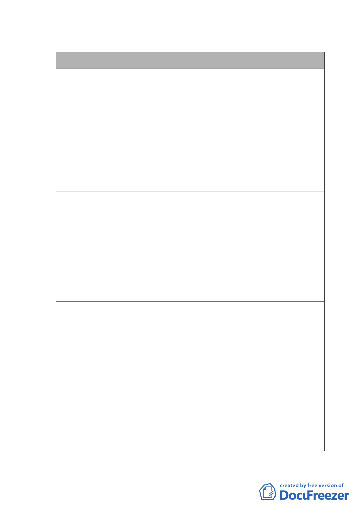

六、審議辦理情形一覽表：
日期 市都委會審議辦理情形 市府相關單位回應與說明 備註
93.4.22
第五二七次委員會議決議：
本案由張委員桂林、黃呂委
員錦茹、邊委員泰明、陳委
員武正、蔡委員淑瑩、張委
員章得、黃委員武達、李委
員永展、廖委員洪鈞組成專
案小組，並請李委員永展擔
任召集人儘速進行審查後再
提會討論。
（略）
93.5.20
專案小組簡報會議結論：本
案請市府相關單位就涉及拆
遷補償部分，研擬容積移
轉、土地交換、專案住宅安
置等具體可行措施，於一個
月內向拆遷戶進行說明後，
併協調結果續提本會專案小
組審議。
（略）
93.12.14
函請市府都市發展局、民政 民政局 93.12.28 函覆略以：
局，就涉及拆遷補償部分儘 「案依 93 年 10 月 26 日『北大
速將協調結果彙送本會憑辦 同文化園區計畫專案推動小組
第三次會議』結論：『請文化局
與發展局速共擬具體都市設計
管制方案，交民政局辦理住戶
說明會後，再提會討論』，本案
刻由文化局邀集專家學者研商
孔廟東側都市設計管制方案中
有關建築高度涉及古蹟週邊管
制等限制問題」。
-3-